目黒区八雲のK様ご購入の閑静な住宅街の一戸建てご新居、転居前・空室クリーニングをDAIZENチームで実施しました！約30万円税込でした！
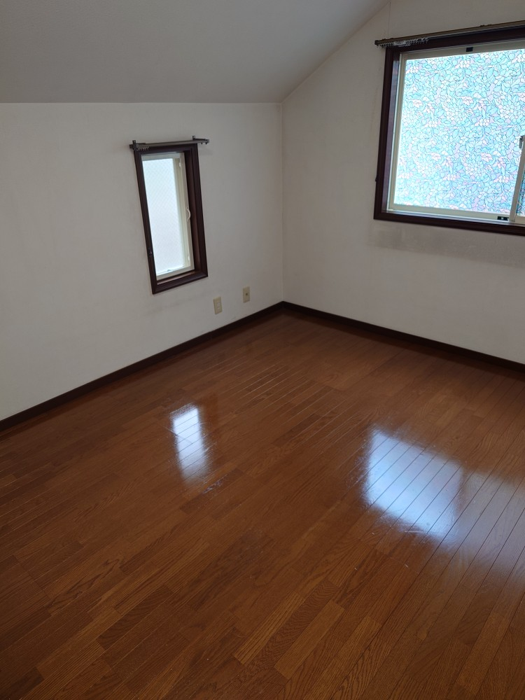
目黒区八雲の閑静な住宅街に新たにK様がご購入なされた一戸建ての、転居前・空室クリーニングを実施しました！8月中にはお住まいになりたいとのご希望でしたので、DAIZENプロフェッショナルチームから精鋭を選抜して、2日間8名体制で徹底的に、隅々まで綺麗に空室クリーニングを実施しました！一戸建て様は、とても窓が多いのが特徴です、どうしても窓サッシ、窓枠は経年の体積汚れ、カビ汚れが残っておりますので、DAIZENプロフェッショナルメソッドに則り、窓枠から窓ガラス、網戸を外して分解洗浄クリーニング+ガラス表面の体積汚れを窓ガラス専用カッターで丁寧に削ぎ落とし除去しました！浴室、キッチンともにやはり経年の体積汚れが相当有りましたので、こちらもDAIZENプロフェッショナルメソッドに則り、たっぷり時間を掛けて分解洗浄クリーニングをして復元しました！床面をクリーニングして、とても綺麗な一戸建てさんが復活しました！Kさんの奥様もたいへんお喜びになってくださいました。ありがとうございました！ぜひDAIZENの転居前・空室クリーニングをご体験下さい！宜しくお願い致します！
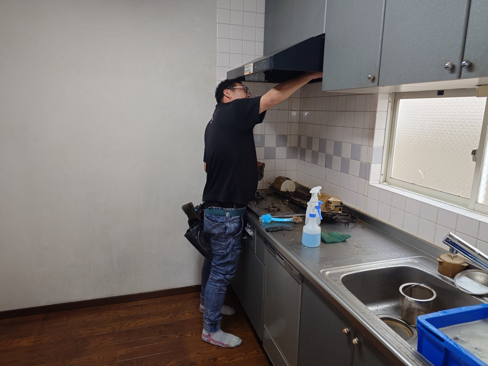
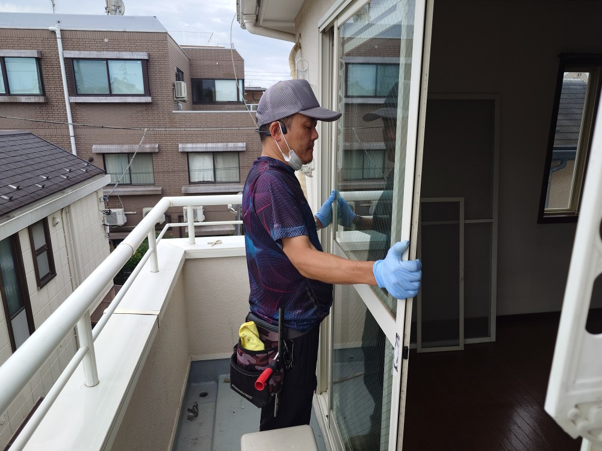
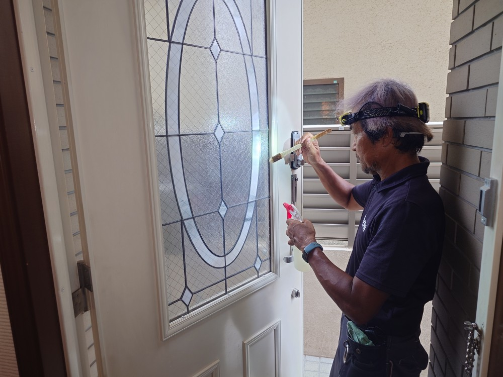
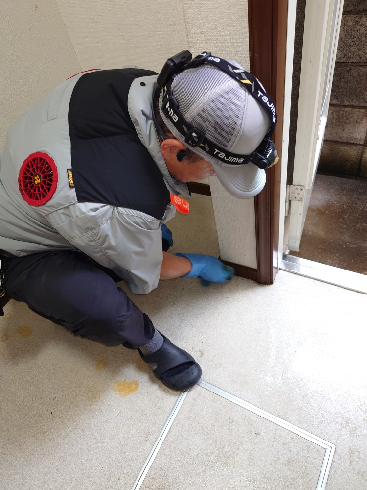
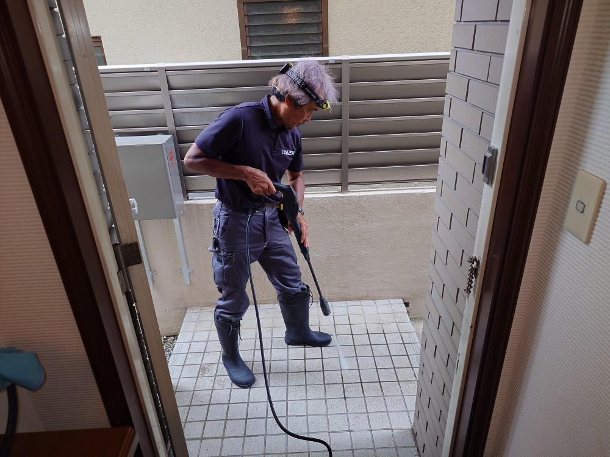
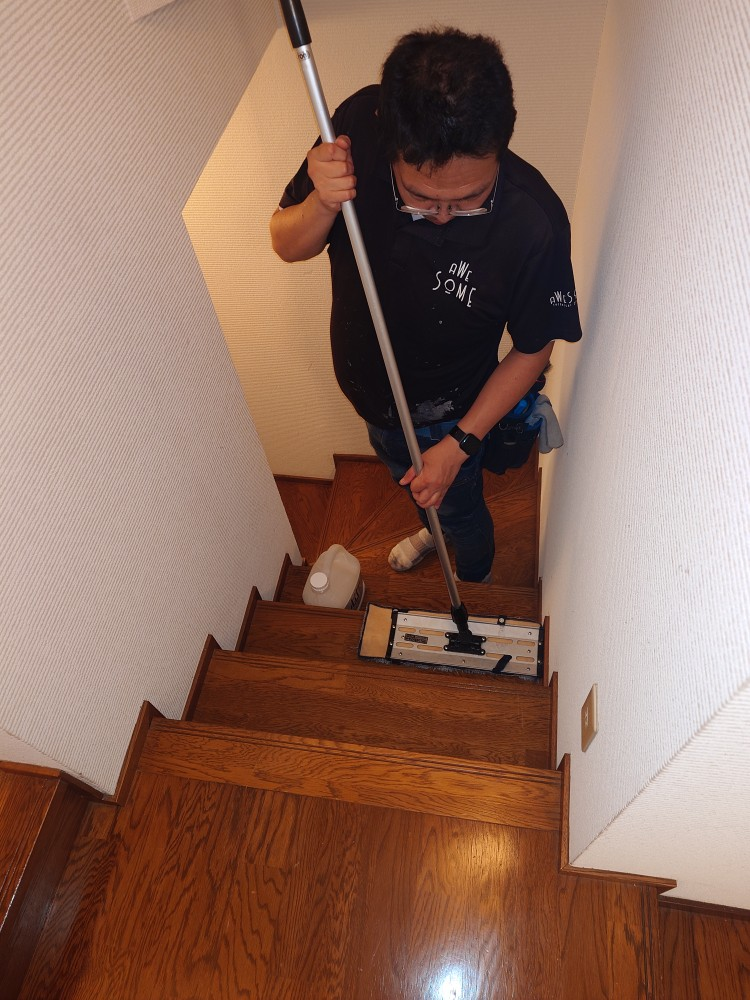
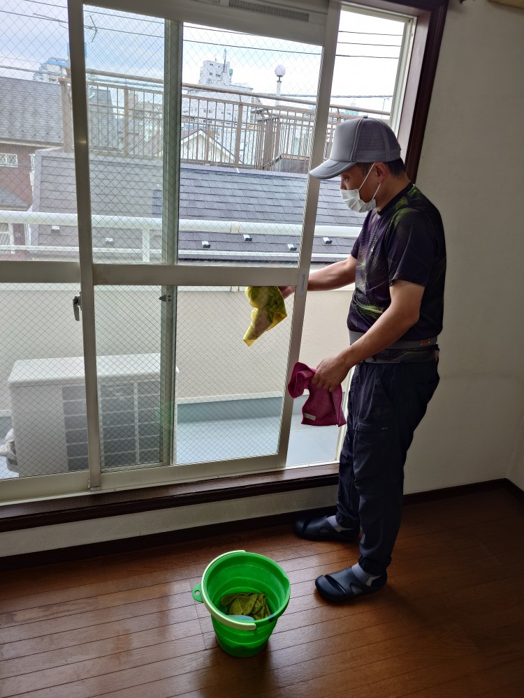
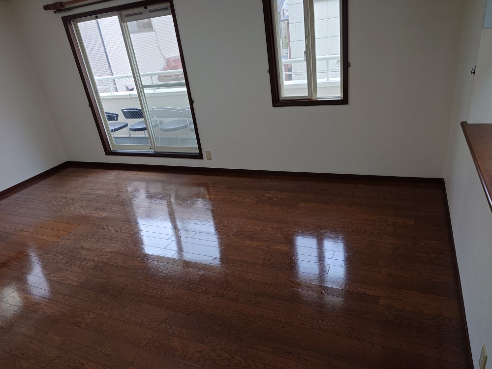
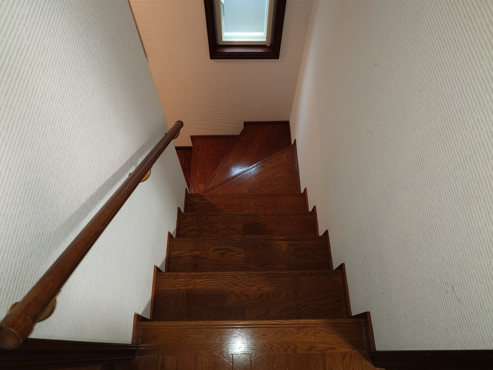
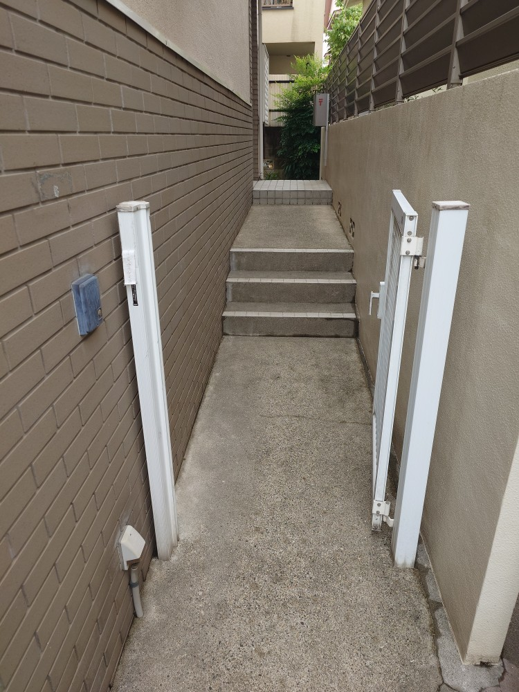